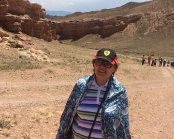
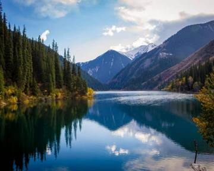

Сегодня в поездке
Ваша поездка на одном экране
3/7
День поездки
2
Города в плане
6
Мест сохранено
🤖Совет на сегодня
Едете в Чарынский каньон — возьмите воду и головной убор, тени там почти нет. Лучшее время — раннее утро.
💱Быстрый обмен
≈ 48 000 тенге
📌Сохранённые места
Алматы · Кок-Тобесохранено
Алматы · Зелёный базарсохранено
Чарынский каньонпоездка на день
Написать в WhatsApp →
Это бета — что добавить или поправить, пишите прямо сюда.
Путеводитель
Города Казахстана
Выберите направление и откройте для себя лучшие места нашей страны

🏜️Charyn Canyon
🏔️Kolsai Lakes
🌲Kaindy Lake
⛰️Bozzhyra
🎿Shymbulak
Готово
Алматы
Горы, базары, кофейни
Готово
Астана
Байтерек, Хан Шатыр
Готово
Туркестан
Мавзолей Ясави
Готово
Шымкент
Юг, история, еда

Курс и цены
Сколько что стоит
💱Конвертер
≈ 48 000 тенге
Демонстрационный курс — актуальный курс проверяйте по прилёту.
🧾Ориентировочные цены
Такси по городу800–1500 ₸
Кофе навынос700–1200 ₸
Обед в кафе2000–4000 ₸
SIM-карта с интернетом2000–3500 ₸
Безопасность
На всякий случай
🚨Экстренные номера
Все службы112
Полиция102
Скорая помощь103
Пожарная служба101
🛂Если что-то пошло не так
Сохраните контакты посольства вашей страны заранее — на случай потери документов.
Разговорник
Часто нужные фразы
ЗдравствуйтеSälemсэ-ЛЕМ
СпасибоRakhmetрах-МЕТ
Да / НетИä / Жоқи-Я / жок
ИзвинитеКешіріңізке-ши-ри-НИЗ
Заметки
Идеи в дороге
★ Хочу посетить
Сохраняется прямо на этом телефоне, без интернета.